팀 편성
로스터에서 캐릭터를 골라 슬롯에 배치 · 아이콘을 눌러 스펙/스킬 조정
캐릭터 로스터
—
—
—
로스터에서 캐릭터를 골라 슬롯에 배치 · 아이콘을 눌러 스펙/스킬 조정
XXL WOOFIA는 5인 파티의 시너지가 핵심인 게임이지만, 다섯 캐릭터를 한 번에 조합해 결과를 확인할 수 있는 도구가 없었습니다. 캐릭터 보고서만으로는 실제 사용감과 차이가 커 성능을 가늠하기 어렵다는 한계도 있습니다. 이 시뮬레이터는 조합·스펙·행동 계획을 직접 구성해 데미지를 수치로 확인할 수 있도록 만든 도구입니다.
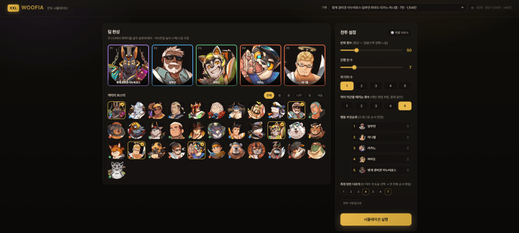
캐릭터 로스터에서 5인 파티를 구성합니다. 아이콘 우상단의 X 또는 로스터에서 다시 눌러 캐릭터를 제외할 수 있습니다.
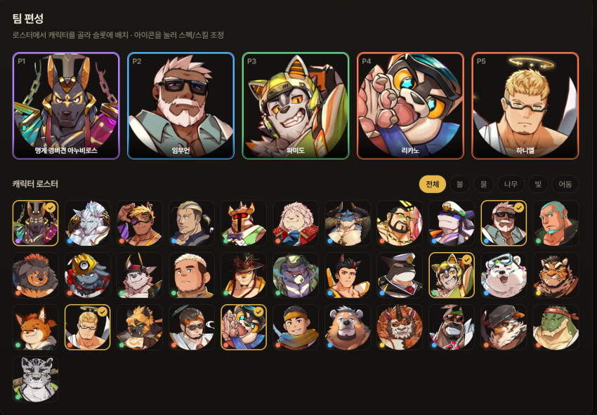
각 캐릭터를 선택하면 상세 패널이 열립니다.
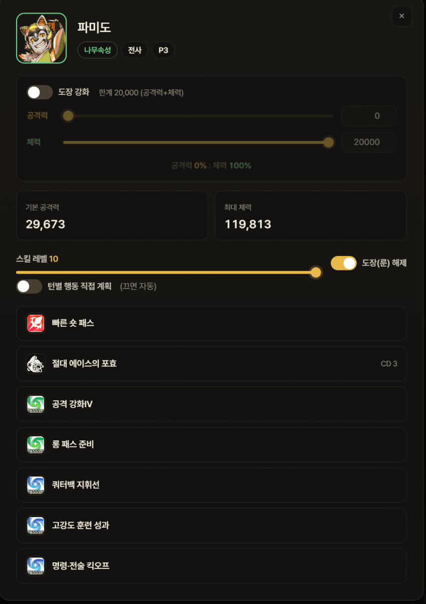
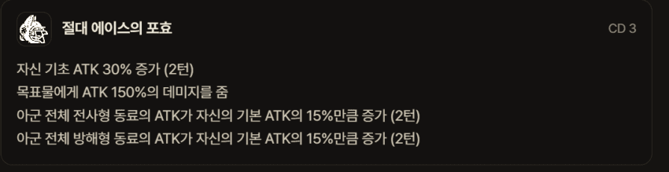
캐릭터 상세 패널의 도장 강화 위 오른쪽에 있는 ◈ 캐릭터 스펙 설정 버튼을 누르면 카드 옆으로 창이 열립니다. 스타 · 진화 단계 · 레벨 · 유대와 스킬별 레벨을 캐릭터마다 따로 지정합니다.
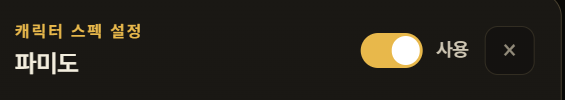
우측 상단 사용이 꺼져 있는 동안에는 지금까지처럼 풀육성 (Lv60 · 스타5 · 유대5 · 전 스킬 10 · 도장 해제) 기준으로 계산합니다. 켜지 않으면 결과가 달라지지 않고, 켠 직후에도 값은 풀육성 그대로라 원하는 항목만 내리면 됩니다.
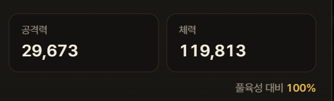
지금 설정으로 계산한 공격력 · 체력이 즉시 표시되고, 슬라이더를 끄는 동안 숫자가 따라 움직입니다. 오른쪽 풀육성 대비 %로 만렙과 얼마나 차이 나는지 바로 확인할 수 있습니다. 이 값은 도장 강화를 더하기 전의 기본 수치입니다.
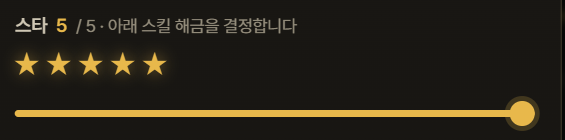
스타는 슬라이더를 움직이면 별이 켜집니다. 아래 스킬 해금을 결정하는 핵심 값이라, 내리면 잠기는 스킬이 스킬 레벨 목록에서 함께 바뀝니다.
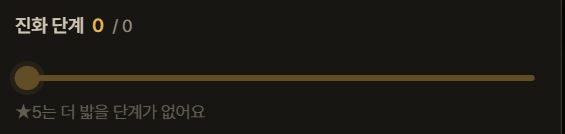
진화 단계는 스타 안에서의 단계입니다. 상한이 스타에 따라 달라지고(스타0은 4, 스타4는 24), 스타5는 더 밟을 단계가 없어 비활성됩니다. 단계 중간에는 해금이 없고 스탯만 오릅니다.
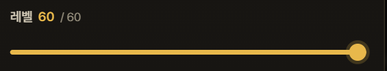
레벨은 1~60이며 스탯에 가장 크게 영향을 줍니다.
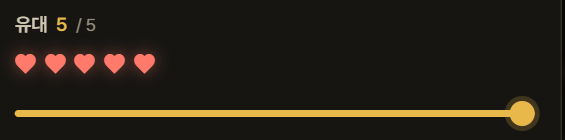
유대는 0~5이고 슬라이더에 따라 하트가 켜집니다. 유대 보정이 없는 희귀도에서는 비활성됩니다.
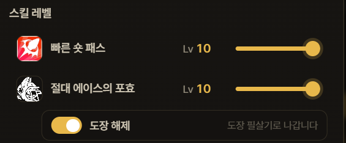
평타 · 필살기 · 패시브를 각각 1~10으로 정합니다. 스킬 이름과 아이콘이 함께 표시됩니다. 필살기 바로 아래 도장 해제 스위치를 켜면 도장 필살기가, 끄면 일반 필살기가 나가며 오른쪽에 어느 쪽이 나가는지 적혀 있습니다. 이 스위치는 스타 3부터 조작할 수 있습니다.
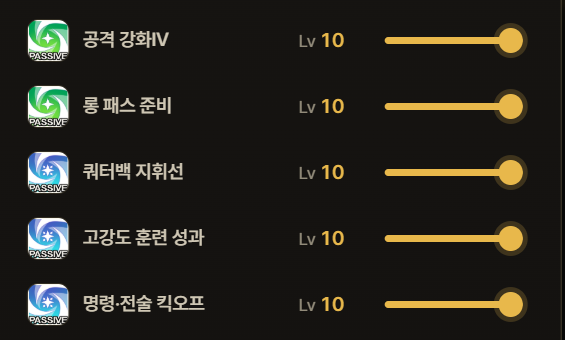
패시브도 하나씩 따로 조절합니다. 스타가 낮아 잠긴 스킬은 스타 N 해금으로 표시되어 아예 발동하지 않고, 해방됐지만 아직 레벨을 못 올리는 스킬은 스타 N부터로 표시되며 1레벨로 고정되어 계산됩니다.
스타는 스킬 해금을 결정합니다. 스타 2에서 패시브 2의 레벨업이 열리고, 스타 3에서 패시브 3과 도장이, 스타 4·5에서 패시브 4·5가 차례로 열립니다. 평타 · 필살기 · 패시브 1은 처음부터 조절할 수 있습니다.
스펙을 켠 캐릭터는 편성 슬롯 왼쪽 아래에 ★N 배지가 붙어, 풀육성이 아닌 캐릭터를 한눈에 구분할 수 있습니다. 비교 창에서는 캐릭터를 누른 뒤 교체 옆의 ◈ 스펙 버튼으로 같은 화면을 열 수 있고, 비교군마다 스펙을 다르게 줘서 육성도 차이를 그대로 비교할 수 있습니다.
턴마다 캐릭터의 행동(평타 · 궁 · 방어)을 직접 지정할 수 있습니다. 끄면 자동으로 처리되며, 2회 행동 캐릭터 등 특수 케이스는 전용 설정으로 제공됩니다.
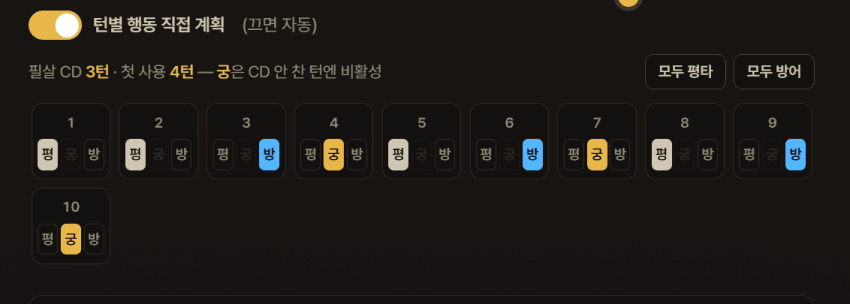
0(아군을 타격하지 않음), 1~5(적 N명이 개별 타격), 전체(아군 전체 1회 동시 피격). 반격 횟수 등 결과가 달라집니다.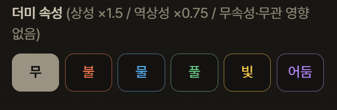
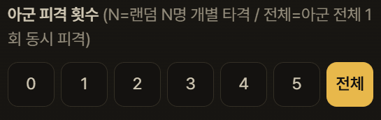
같은 턴에 누가 먼저 움직이느냐에 따라 버프·연계 결과가 달라지므로, 행동 순서를 직접 지정할 수 있습니다.
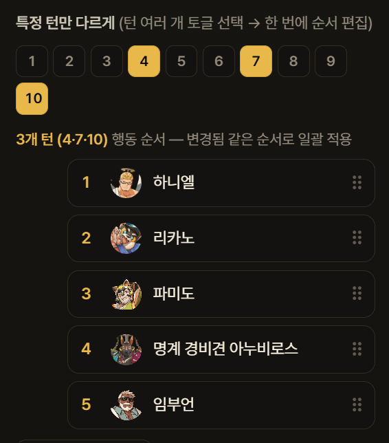
행동 우선순위 옆의 행동 고급 설정 버튼을 누르면 열립니다. 턴마다 누가 · 어떤 순서로 · 무엇을 할지 전부 직접 정하는 화면입니다.
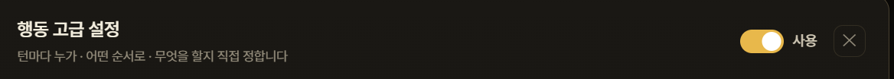
우측 상단 사용을 켜야 적용됩니다. 켜는 순간 행동 우선순위 · 특정 턴만 다르게 · 캐릭터별 턴별 행동 계획이 모두 이 화면으로 대체되고 잠깁니다. 끄면 원래 설정으로 돌아가고, 껐다 켜도 여기서 짠 내용은 지워지지 않습니다. 처음 켤 때는 기존 설정과 무관하게 기본 세팅에서 시작합니다.
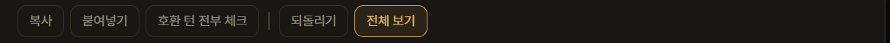
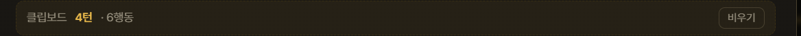
복사하면 클립보드 줄이 나타나 몇 턴 · 몇 행동을 담고 있는지 알려줍니다. 비우기로 지웁니다.
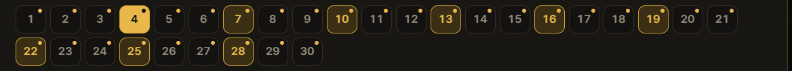
편집할 턴을 고릅니다. 기본값과 달라진 턴은 우상단에 점이 붙습니다. 위 그림에서는 4·7·10·13·16·19·22·25·28턴이 선택되어 테두리가 살아 있습니다 — 여러 턴을 함께 선택하면 붙여넣기와 기본값이 선택한 턴 전체에 적용됩니다.
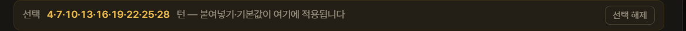
선택한 턴 목록이 그대로 표시되고, 선택 해제로 비웁니다.
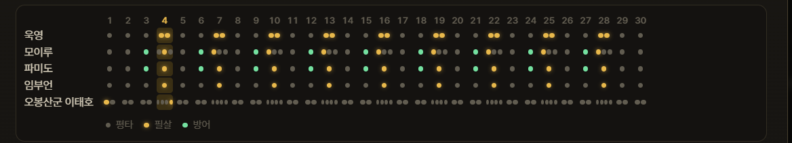
전체 보기를 누르면 전 턴이 표로 펼쳐집니다. 점 색은 평타 · 필살 · 방어를 뜻하고, 한 칸에 점이 여러 개면 그 턴에 여러 번 행동한다는 뜻입니다. 칸을 클릭하면 그 캐릭터의 그 턴 행동만 따로 고칠 수 있습니다.
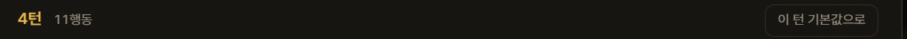
지금 편집 중인 턴과 그 턴의 총 행동 수입니다. 이 턴 기본값으로는 이 턴만 되돌립니다.
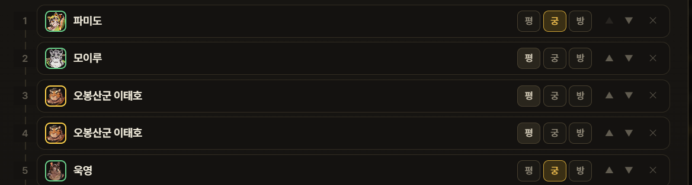
왼쪽 번호가 실행 순서입니다. 각 줄에서 평 · 궁 · 방을 골라 행동을 바꾸고, ▲▼로 순서를 옮기며, ✕로 그 행동을 뺍니다. 지금 선택된 행동은 노란색으로 표시됩니다.
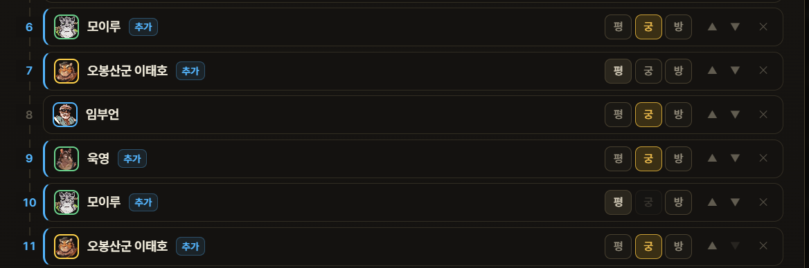
추가 배지가 붙은 줄은 앞선 필살기가 만들어 준 행동입니다(임부언·욱영·이태호 등). 같은 캐릭터가 한 턴에 여러 번 나올 수 있습니다. 위 그림 10번 줄의 궁처럼 쓸 수 없는 행동은 미리 비활성되어 잘못 넣을 수 없습니다.
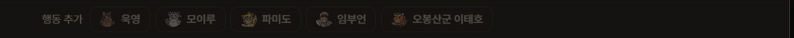
캐릭터 칩을 눌러 그 턴에 행동을 더합니다. 행동 예산이 없는 캐릭터는 칩이 나타나지 않습니다.
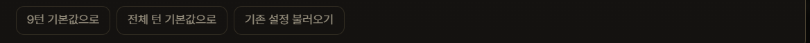
행동 예산은 시뮬레이터가 계산합니다. 요청한 행동이 예산을 넘으면 그 행동은 실행되지 않고, 쿨타임이 안 찬 필살기는 평타로 나갑니다 — 목록에 그렇게 표시되니 실제 결과와 화면이 어긋나지 않습니다.
비교 창에서도 행동 우선순위 팝업 안의 같은 버튼으로 비교군별 타임라인을 따로 짤 수 있습니다. 비교군에 이 설정이 켜져 있으면 그 캐릭터의 행동 항목은 잠깁니다.
총 데미지·DPS·턴 수와 함께 캐릭터별 기여도를 막대 랭킹으로 표시합니다. 각 수치는 중앙값·최소값·최대값을 함께 제공합니다.
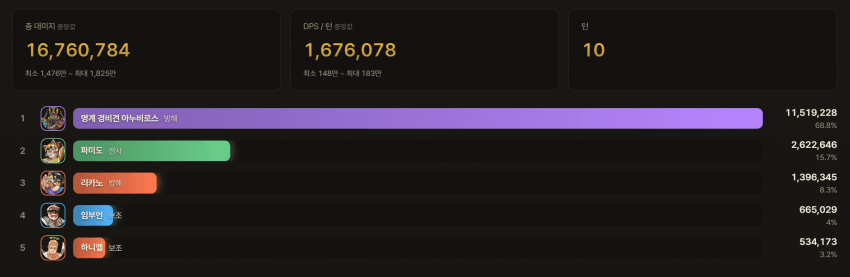
턴별 데미지를 누적 막대로 표시하며, 그래프에 마우스를 올리면 해당 턴의 캐릭터별 수치가 나타납니다.
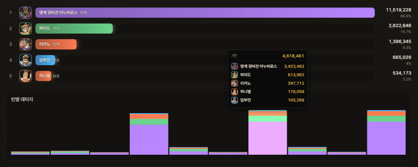
데미지의 출처를 끝까지 추적합니다.
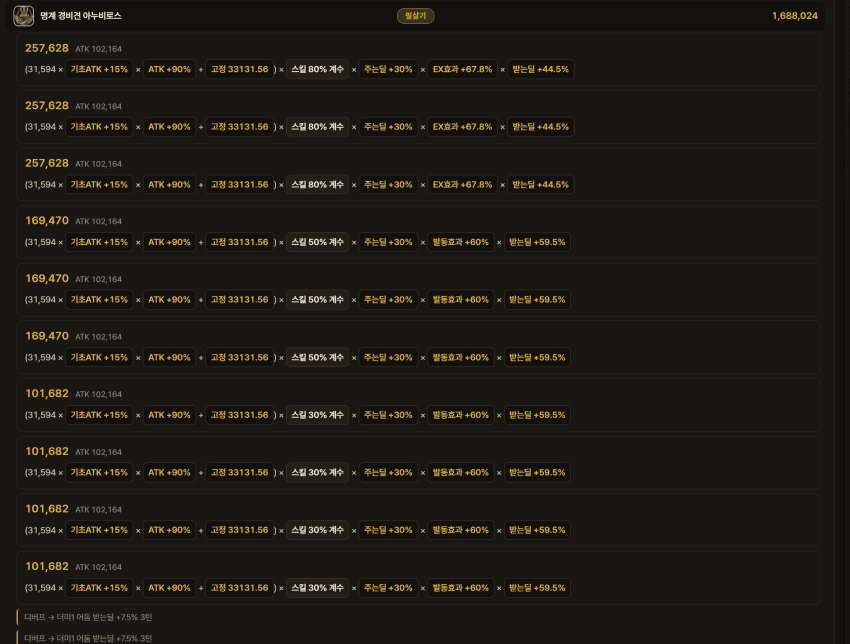
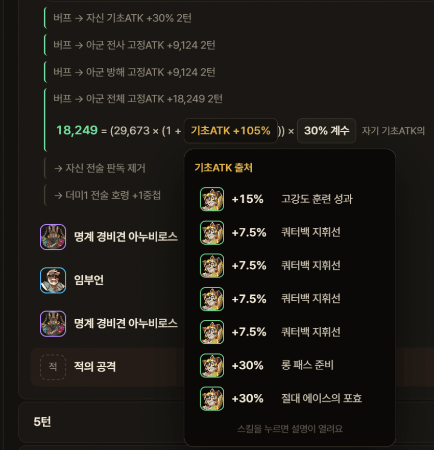
서로 다른 두 조합(또는 동일 조합의 변형)을 나란히 두고 턴별 누적 데미지를 비교합니다.
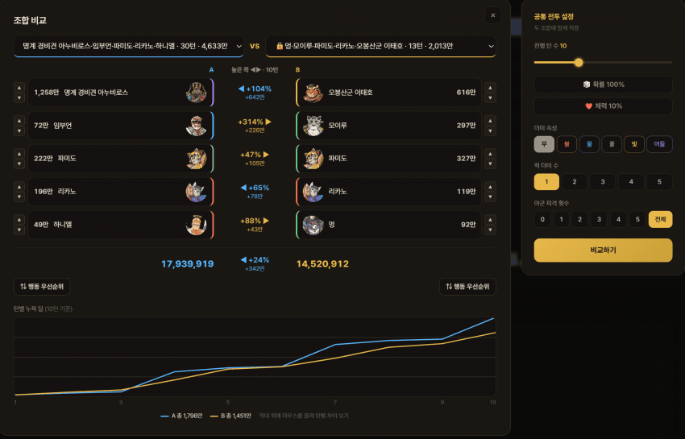
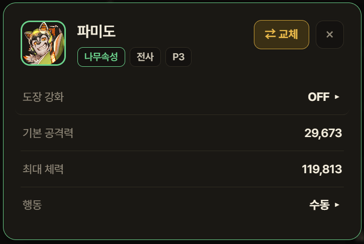
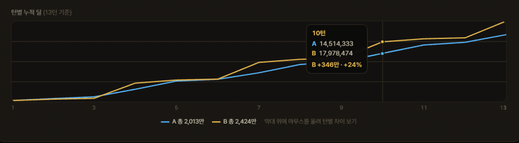
시뮬레이션 결과는 자동으로 기록되며, 이름 검색·정렬로 다시 찾아볼 수 있습니다. 기록 항목의 점 3개 메뉴에서 이름 변경 · 상단 고정 · 잠금 · 삭제가 가능합니다.
내보내기 / 가져오기 — 선택한 기록(복수 선택 가능)을 파일로 저장하거나 공유 코드로 복사할 수 있으며, 받은 코드를 가져오기에 붙여넣으면 그대로 불러옵니다.
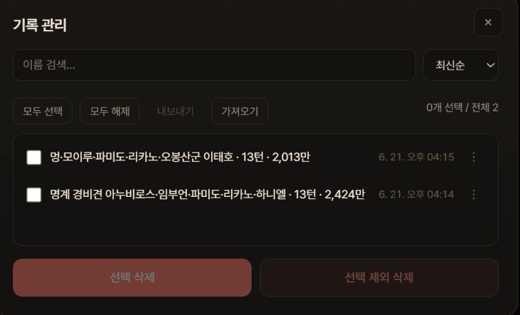
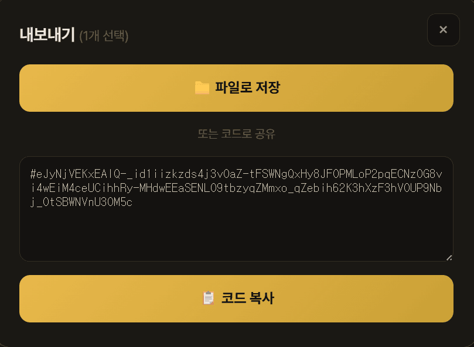
⚠️ 모든 캐릭터의 검증이 완료된 것은 아니며, 일부 캐릭터의 패시브 처리에 오류가 있을 수 있습니다. 오류나 개선점을 발견하면 피드백 부탁드립니다.